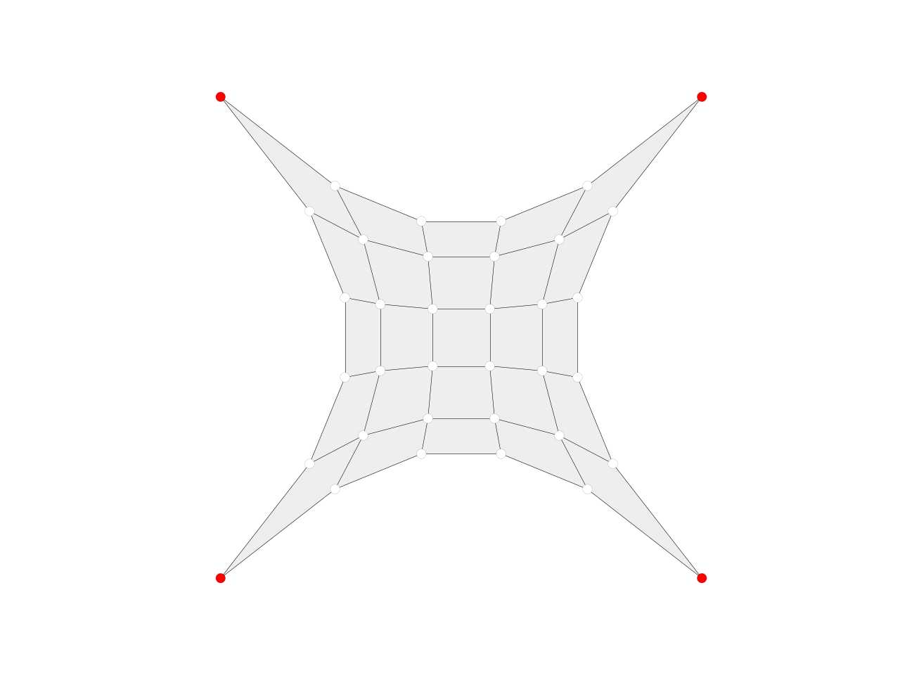

mesh_smooth_centroid
-
compas.geometry.mesh_smooth_centroid(mesh, fixed=None, kmax=100, damping=1.0, callback=None, callback_args=None)[source] Smooth a mesh by moving every free vertex to the centroid of its neighbours.
Parameters: - mesh (Mesh) – A mesh object.
- fixed (list, optional) – The fixed vertices of the mesh.
- kmax (int, optional) – The maximum number of iterations.
- damping (float, optional) – The damping factor.
- callback (callable, optional) – A user-defined callback function to be executed after every iteration.
- callback_args (list, optional) – A list of arguments to be passed to the callback.
Raises: Exception– If a callback is provided, but it is not callable.Example
import compas from compas.datastructures import Mesh from compas.visualization import MeshPlotter from compas.geometry import mesh_smooth_centroid mesh = Mesh.from_obj(compas.get('hypar.obj')) fixed = [key for key in mesh.vertices() if mesh.vertex_degree(key) == 2] mesh_smooth_centroid(mesh, fixed=fixed) plotter = MeshPlotter(mesh) plotter.draw_vertices(facecolor={key: '#ff0000' for key in fixed}) plotter.draw_faces() plotter.draw_edges() plotter.show()